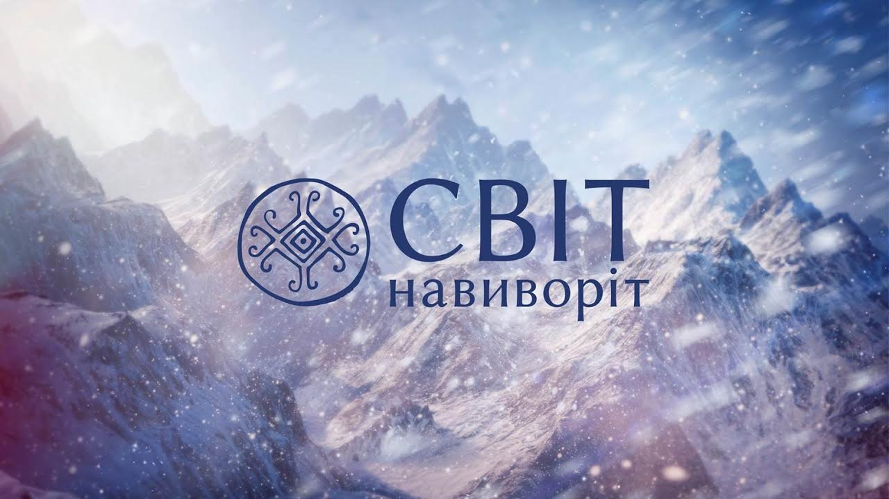
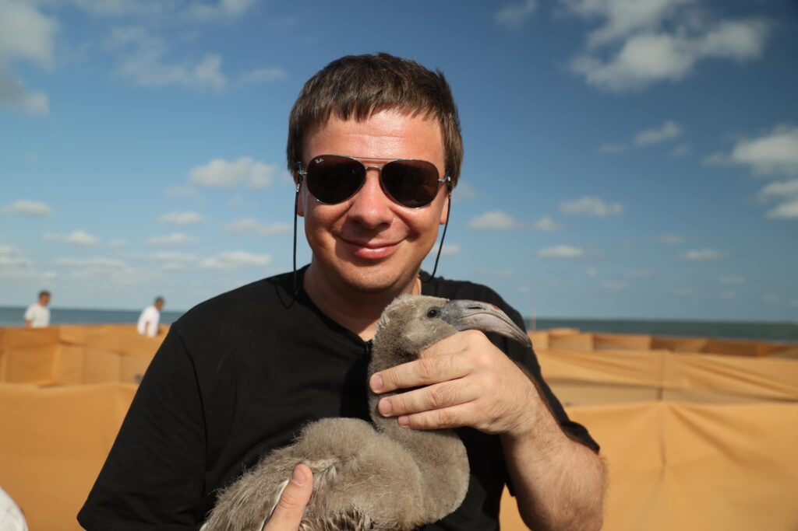

Світ без туристичних прикрас
На відміну від більшості тревел-шоу, команда показує країни такими, якими їх бачать місцеві, а не туристи.

«Світ Навиворіт» — авторський телепроєкт, який знайомить глядача з найвіддаленішими куточками планети та справжнім життям людей.
Команда долає тисячі кілометрів, піднімається в гори, проходить джунглі, досліджує вулкани та знайомиться з народами, які майже не контактують із зовнішнім світом.
Саме завдяки такому підходу програма вже понад 15 років залишається однією з найпопулярніших в Україні.
Дмитро Комаров
Журналіст, фотограф, мандрівник. Понад 15 років у подорожах — без постановок і туристичних шаблонів.
«Найцікавіше в подорожі — це не пам'ятки, а люди, які поруч із ними живуть.»
Дмитро Комаров — український журналіст і телеведучий. Разом із командою «Світ Навиворіт» він відкрив глядачам десятки країн, дику природу, унікальні народи та історії, яких немає у путівниках.
За роки роботи проєкт здобув численні телевізійні нагороди та мільйонну аудиторію.
